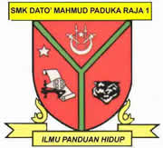
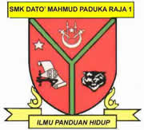

| Type | Institution | Location | Year | Notes |
|---|---|---|---|---|
| University (Diploma) |  |
2023 - present | Diploma in Information Management | |
| Secondary school |  | 2018 - 2023 | Completed SPM with 5As | |
| Primary school |  |
2012 - 2017 | Completed UPSR with 5As |
╰┈➤ Every step of my education has been a part of shaping who I am today. From my early days in primary school, discovering curiosity and creativity, to secondary school where I explored my interests and built my foundation, each stage has guided me toward my current path in university. Now, as a Diploma in Information Management student at UiTM, I continue to learn, grow, and explore new skills that inspire me to create, organize, and express myself in meaningful ways.
Below is a summary of the schools and institutions I’ve attended over the years:
| Type | Institution | Location | Year | Notes |
|---|---|---|---|---|
| University (Diploma) | |
2023 - present | Diploma in Information Management | |
| Secondary school |  | 2018 - 2023 | Completed SPM with 5As | |
| Primary school | |
2012 - 2017 | Completed UPSR with 5As |